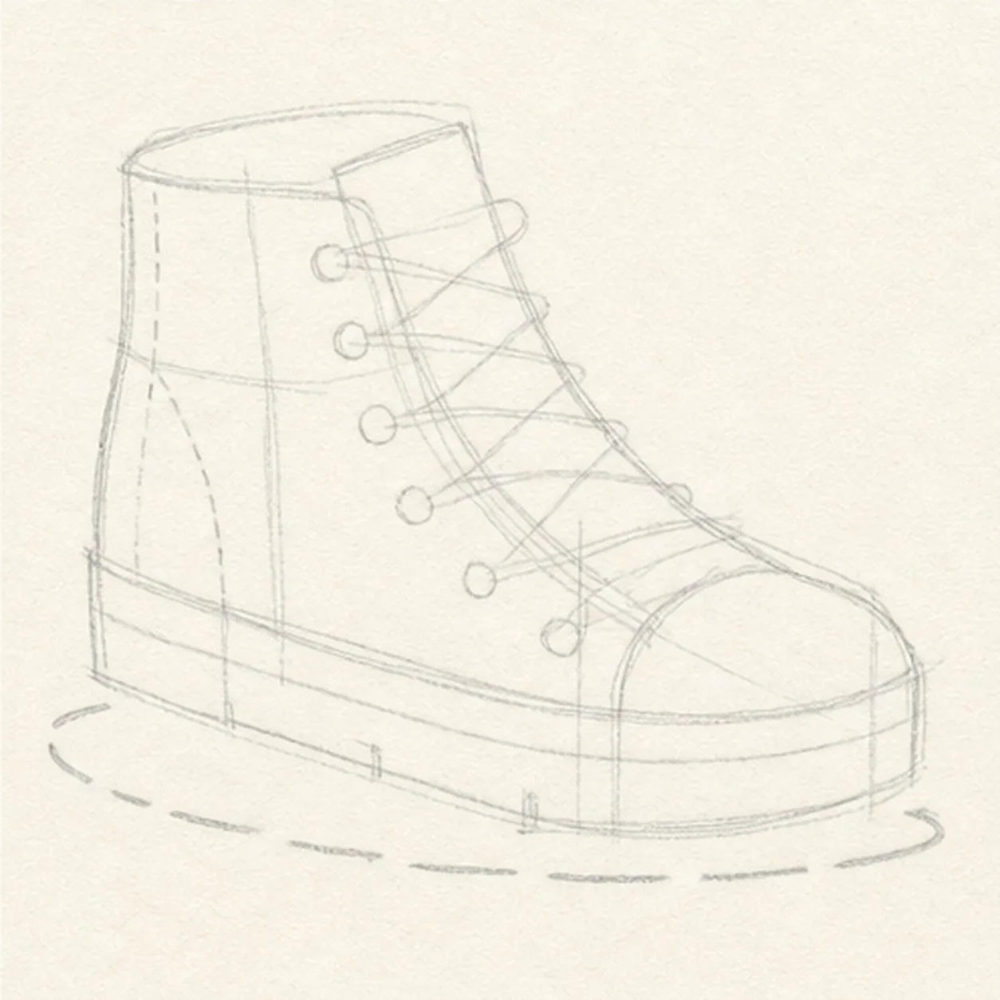
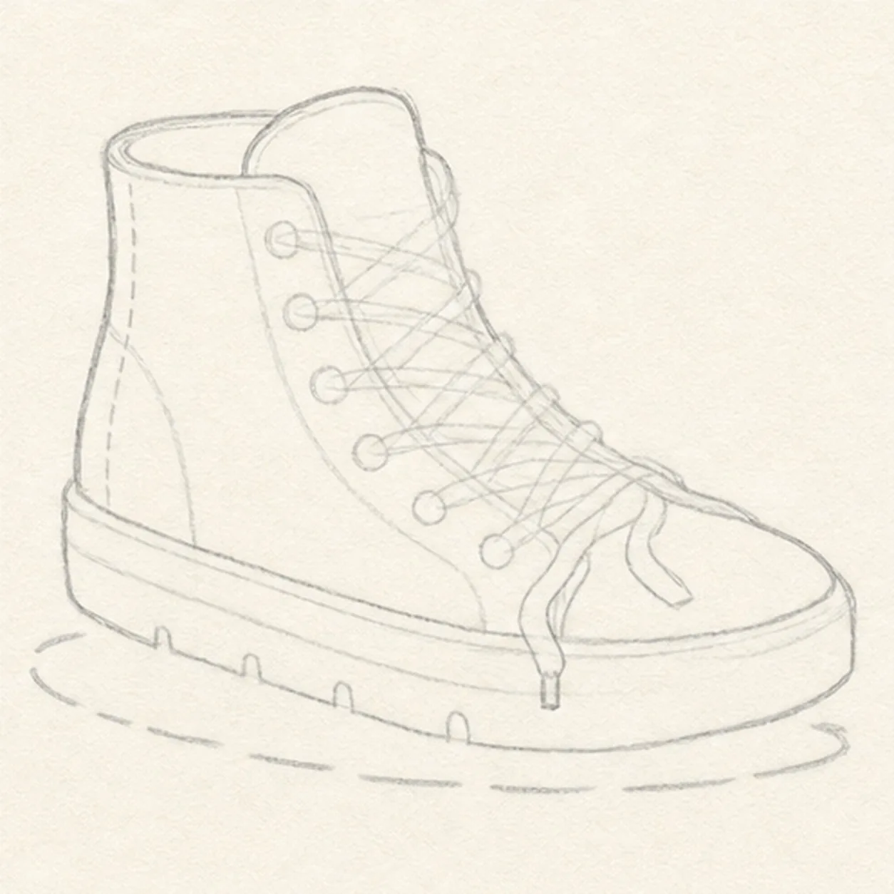
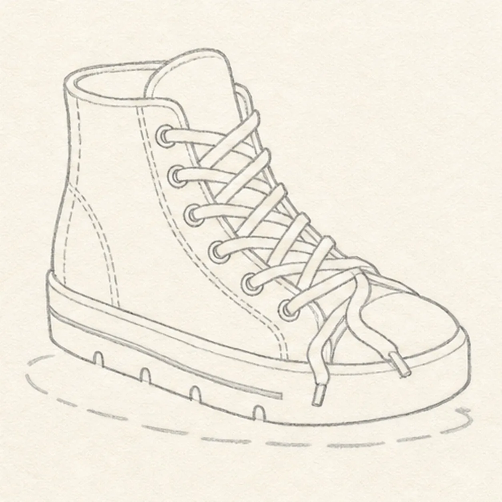
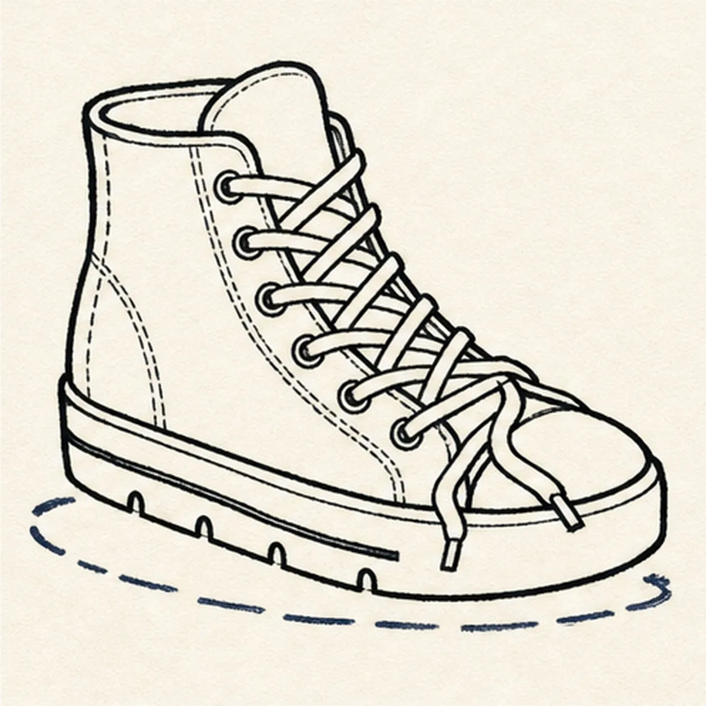
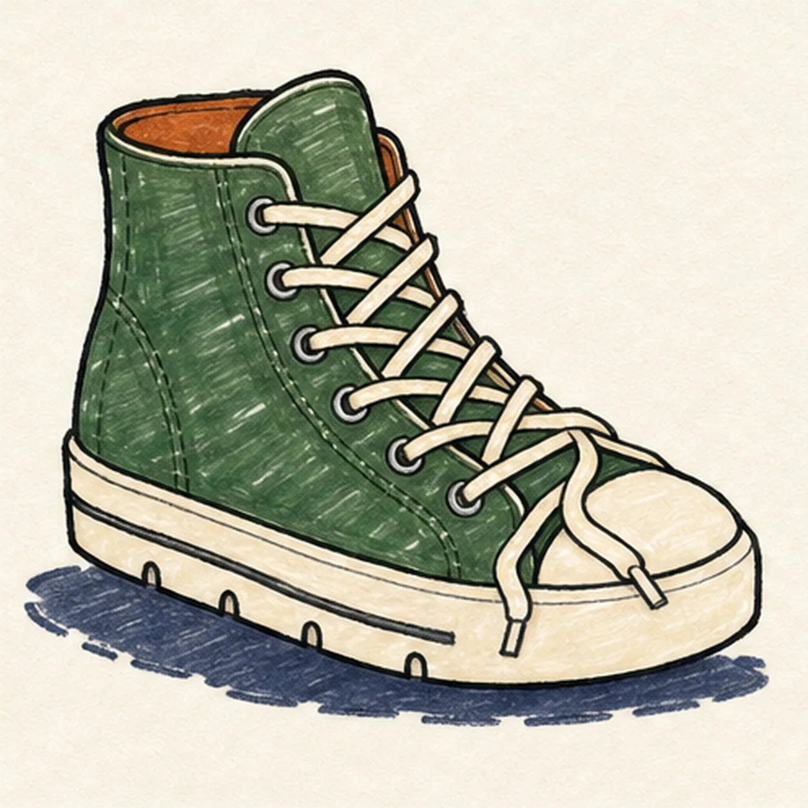

Felt-tip marker mode
Let's draw a high-top sneaker with loose laces
Treat this as one playful practice round: sketch the idea loosely, simplify the shapes, then commit with confident marker outlines and bright fills.
-
01

Block the high-top angle
Use pale construction to place the sole baseline, foot box, high ankle envelope, tongue footprint, rounded toe-cap curve, six visible eyelet positions, crisscross lace route, two loose-end routes, seams, stripe, four tread notches, and broken shadow.
Marker tip: Ghost the sole angle first, then compare the open paper above the toe with the space behind the ankle. Reserve the tongue and lace footprint now so you never finish canvas seams underneath the crossing laces.
-
02

Shape the canvas and sole
Wrap the guides with one rounded toe cap, thick sole, heel, high ankle collar, and tongue while keeping the eyelet, lace, seam, stripe, tread, and shadow routes pale and visible.
Marker tip: Pull the sole edges in long relaxed passes and let the ankle lean slightly forward. Check the negative space between tongue and collar so the opening reads as depth instead of a flat line.
-
03

Thread the loose laces
Add exactly six visible eyelets, one crisscross lace path, exactly two loose ends, the curved side and heel seams, one sole stripe, and exactly four tread notches in light line.
Marker tip: Work from the top eyelet downward and alternate the crossing direction at each gap. Trace each lace from eyelet to eyelet with your finger before drawing so the two loose ends emerge from the route instead of appearing from nowhere.
-
04

Ink the shoe rhythm
Trace only the established shoe, sole, tongue, six eyelets, crisscross laces, two ends, seams, stripe, tread notches, and broken shadow with thick handmade black felt-tip.
Marker tip: Ink the laces first where they sit on top, let them dry, then draw the tongue and canvas edges around them. Use heavier weight on the outside shoe contour and lighter pressure on stitching and sole details.
-
05

Fill the canvas color
Add forest green to the canvas, cream to the toe cap, sole, and laces, rust orange to the lining, and muted navy to the shadow with visible directional marker strokes.
Marker tip: Pull green strokes along the ankle and toward the toe so the streaks describe the shoe form. Leave narrow paper gaps beside the black edges, and let the green dry before a second pass near seams.
-
06

Lace up the final lines
Thicken selected established edges, even the existing marker fills, deepen the broken shadow, clarify paper highlights, and erase only the pale guides that distract.
Marker tip: Count six visible eyelets, two loose lace ends, one sole stripe, and four tread notches, then follow the entire lace path without a jump. Change the canvas color or lace looseness if you like while keeping the overlap order clear.
![Handmade felt-tip marker drawing of one mischievous cool-gray raccoon peeking from one open teal trash can with exactly two coral-lined ears, two asymmetric charcoal mask patches, one half-lidded eye and one wide eye glancing toward the right side of the page, one raised brow, one dark nose, one crooked grin with one small tooth, exactly two gray paws gripping the front rim, one curled gray tail with exactly three charcoal bands, exactly two can handles, exactly four long can ribs, one tall open-paper highlight, two mustard accent blocks, one diamond-shaped dent, thick imperfect black outlines, visible marker streaks, and one broken deep-navy shadow](../assets/raccoon-peeking-from-trash-can-finished-v1.webp)